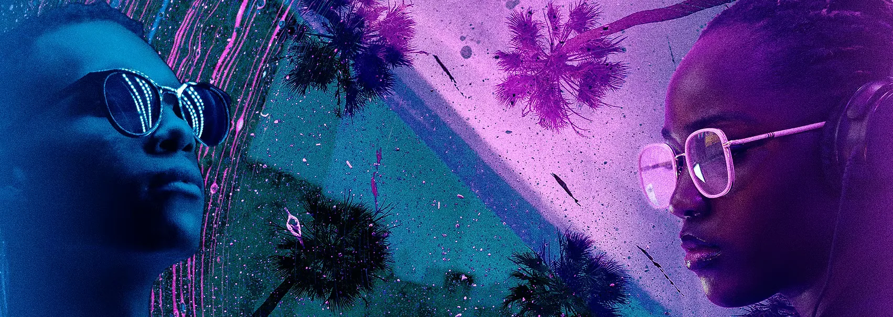
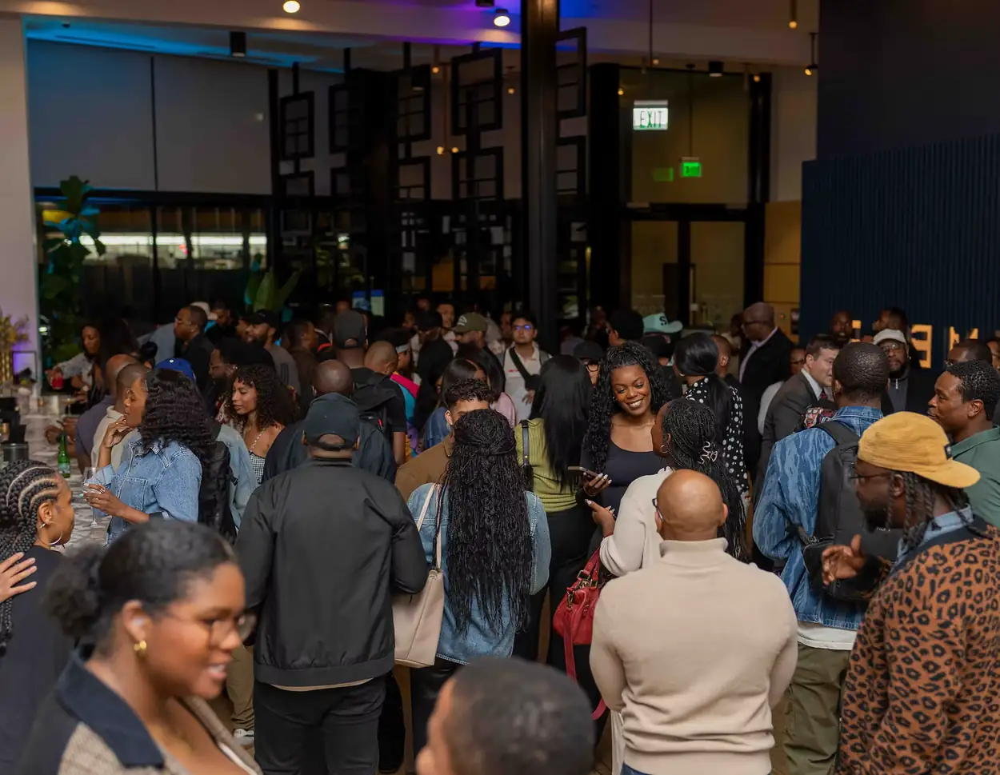
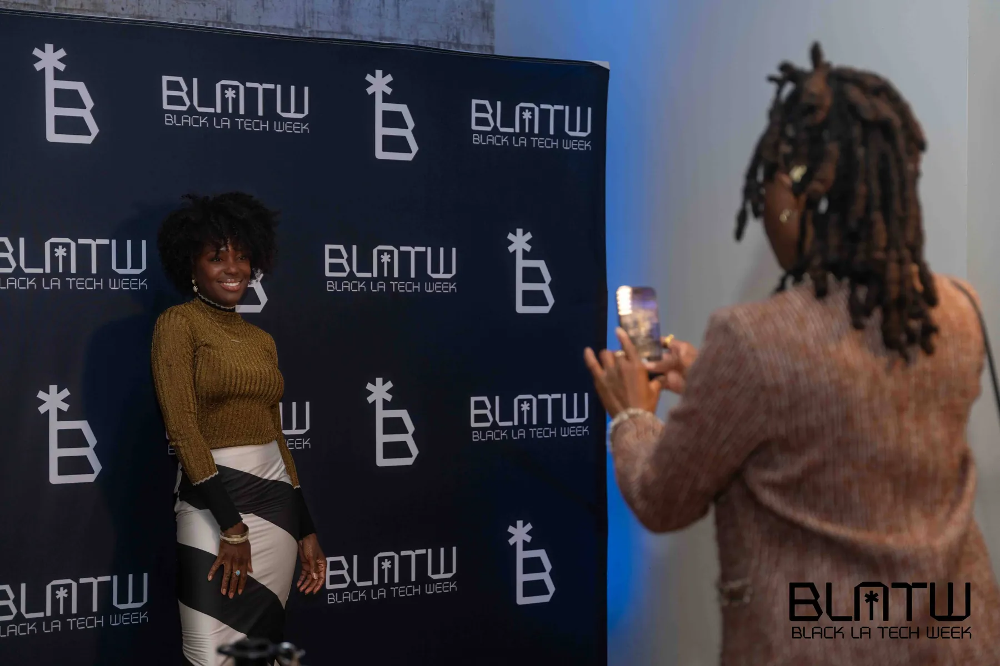
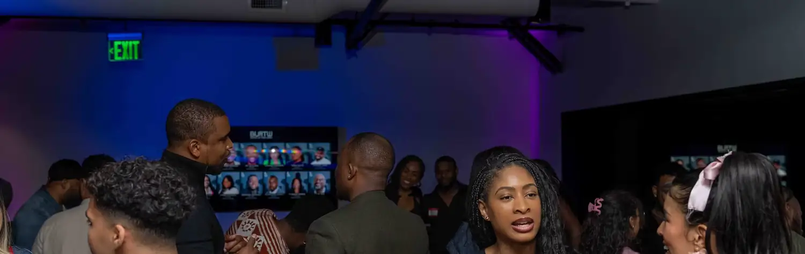

What this is
Held alongside LA Tech Week, Black LA Tech Week is an annual convening of thought leaders, founders, professionals, and entrepreneurs across technology and the creative economy. The event delivers programming designed for LA's Black and Brown tech community, connecting talent to opportunity, strengthening the innovation ecosystem, and elevating Black leadership and ideas.
Who are the organizers
Twelve orgs. One mission.
Black L.A. Tech Week is a coalition, not an institution.

2025 Impact
by the numbers
- 5 Events
- 12 Black Orgs
- 2,000+ Attendees
The Week
Los Angeles Takeover.
Check out our list for the week, or tap to help you RSVP for the events you want to attend.
Future Builders : Family STEM Day 1 of 2
2:00 PM · LDU RSVP on Partiful → MON · OCT 12Masterclass: Immersive Storyworld Building & AI Animation
3:00 PM · LDU RSVP on Partiful → MON · OCT 12The New Beauty Counter: Wellness + Beauty Tech
4:00 PM · Fr3e Space LA RSVP on Partiful → MON · OCT 12Black LA Tech Week Mixer
6:30 PM · Fr3e Space LA RSVP on Partiful → TUE · OCT 13Beyond The Counter
12:00 PM · West Hollywood RSVP on Partiful → TUE · OCT 13LDU AI Academy
1:00 PM · LDU RSVP on Partiful → TUE · OCT 13Prompt vs. Proof: The Future of Thinking in a Vibe-Coded World
6:00 PM · LDU RSVP on Partiful → TUE · OCT 13Engineering The Future (NSBE x Closed Loop x TCLA)
6:30 PM · LDU RSVP on Partiful → WED · OCT 14Co-Work + Coffee
10:00 AM · LDU RSVP on Partiful → WED · OCT 14Built Fast. Secured Smart. Cybersecurity for the Vibe-Coded Era
6:00 PM · LDU RSVP on Partiful → WED · OCT 14Testify & Pitch
6:00 PM · South LA RSVP on Partiful → THU · OCT 15Be Playful: Black Public Media Games Showcase
5:00 PM · LDU RSVP on Partiful → THU · OCT 15The Owners Playbook: Storefronts & Startups
5:30 PM · Playa Vista RSVP on Partiful → THU · OCT 15AI for Biz Workshop
6:00 PM · Microsoft · Playa Vista RSVP on Partiful → FRI · OCT 16AI Music Experience + OOO Mixer
6:30 PM · LDU RSVP on Partiful → FRI · OCT 16Tech + Couture
7:00 PM · Marina Del Rey (TBC) RSVP on Partiful → SAT · OCT 17Venture on the Green
9:00 AM · Maggie Hathaway Golf Course Event details → SAT · OCT 17Bots, Bytes & Bubbles Benefit
6:00 PM · LDU RSVP on Partiful → SAT · OCT 17Tech Week After Dark
8:00 PM · Warwick Hollywood RSVP on Partiful → SUN · OCT 18Future Builders : Family STEM Day 2 of 2
2:00 PM · LDU RSVP on Partiful →
Check In
Sign the guest book.
Join our community, stay connected and keep up with all the things happening throughout the week.

The wall is empty — be the first to sign it.